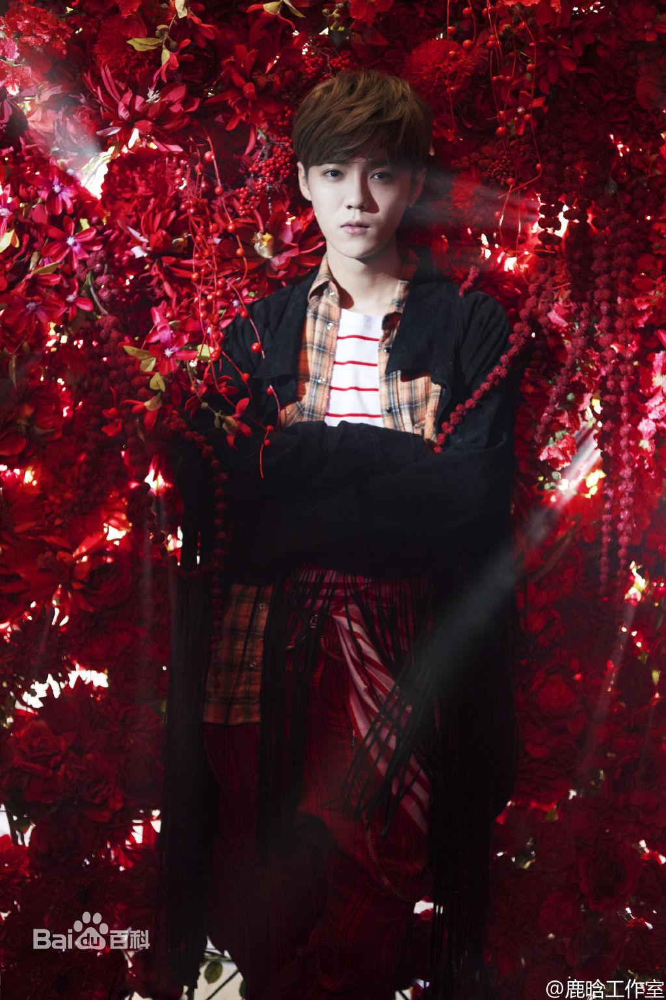

鹿晗（LU HAN），1990年4月20日出生于北京海淀区，中国内地影视男演员、歌手。2008年，赴韩国留学期间在明洞逛街时，
被韩国SM娱乐有限公司星探发掘成为旗下练习生。2012年4月，以韩国男子组合EXO/EXO-M成员正式出道，组合内担任主唱、
领舞、门面担当。2014年8月，个人微博单条评论创吉尼斯世界纪录，成为中文社交媒体上的首位吉尼斯世界纪录获得者。
10月，申请与SM公司合同无效，于2016年7月19日达成和解。>>>
1990年4月20日，鹿晗出生于北京市海淀区。小学就读北京市育英学校（1996级），初中就读北京市师达中学（2002级），高中就读北京海淀外国语实验学校（2005级）。鹿晗小时候爱玩乒乓球，有一次没抢到球桌，意外爱上了踢足球，并成为校队主力。[22] 2008年，鹿晗赴韩国留学，在延世大学韩国语学堂学习韩语，并通过了韩语等级考试。2009年，考入首尔艺术大学实用音乐艺术系[23] 。留学期间在明洞逛街时被SM公司星探发掘[24] 。 2010年，鹿晗通过S.M. Casting System成为旗下练习生.
个人时期
2014年10月10日，因公司无法提供未来发展计划、身体在高强度工作和压力下出现病症等原因，鹿晗申请与SM Entertainment的合同无效[38] ，并于2016年7月19日达成和解[3] 。11月19日，出席2014百度MOMENTS营销盛典，获“2014年度最具价值男明星”奖[39] 。12月2日，为《重返20岁》电影演唱的主题曲《我们的明天》正式发行，MV播放量在50分钟内突破100万[40] ；同月6日，出席尖叫2015爱奇艺之夜年度盛典，获“亚洲人气偶像”奖[41] ；10日，出席“土豆青春的选择2014年度盛典”，获“年度风云人物”奖[42] ；29日，获得“百度沸点”2014年度人气男艺人[43] 。